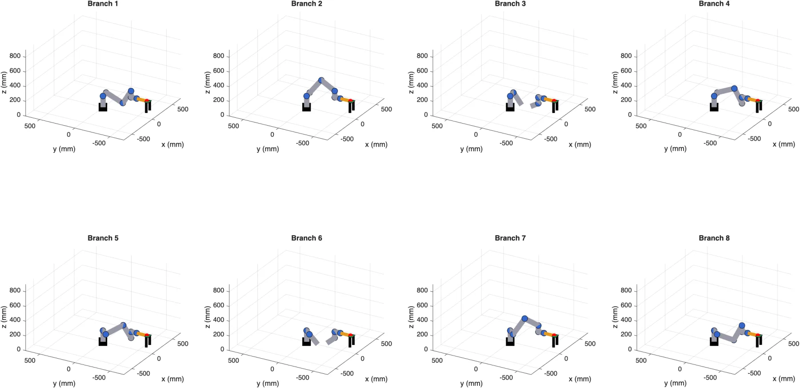
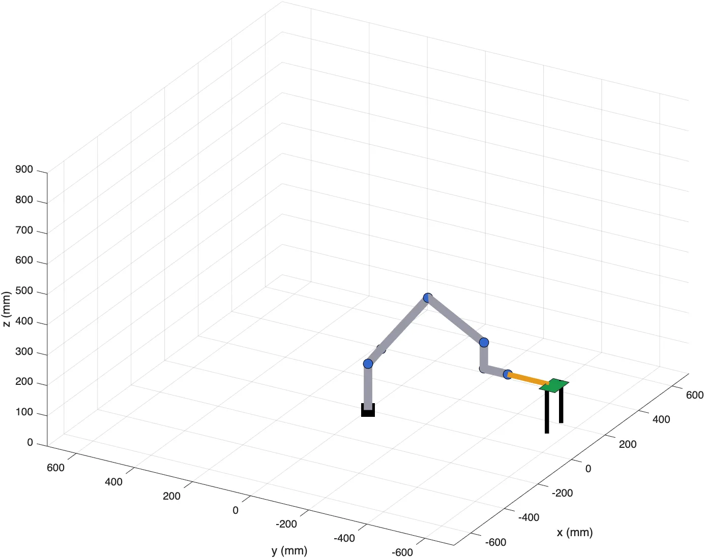

UR3 and UR10e soldering cell
Two collaborative robots on the same workbench: a UR3 picks a PCB and places it on a holder, then a UR10e solders it. The work is to model the cell in MATLAB, from the kinematics to the control. The kinematics of the UR3 is done and checked, the rest is in progress.

The problem
For an arm to bring its tool to a precise place, a geometric model of the robot is needed first. Forward kinematics gives the position of the tool from the six joint angles. Inverse kinematics goes the other way: it gives the angles from the desired position, and this is the one the control needs.
In this cell, the two robots share the same workbench, with PCB holders, a protective shield and a camera above. This is why what each robot can reach and what it has to avoid also need to be studied.
What I did so far
- Frames and DH modelOne frame per joint of the UR3, drawn by hand, then the Denavit-Hartenberg table (Craig's modified convention), with the gripper.
- Forward kinematicsWorked out on paper then coded in MATLAB, and compared with a rigidBodyTree model of the same robot.
- Inverse kinematicsClosed-form solution on paper then in MATLAB. For a given pose, it returns up to eight postures of the arm.
- CheckingEach inverse kinematics solution goes back through the forward kinematics: it has to give the starting pose again. The test is run on 100 random configurations.
- Choice of the postureAmong the eight solutions, the one that keeps the arm above the bench and away from the wall is kept to pick and place the PCB.

What comes next
- Workspace and obstacles for both robots.
- Singularity analysis of the cell.
- Path planning and control in MATLAB, with an injected error that the controller has to correct.
This work is assessed and not handed in yet. The DH table, the code and the numerical results will be added here after the submission, in December 2026.
The tech, in plain words
- DH model
- A standard way to describe a robot arm: four parameters per joint are enough to go from one frame to the next.
- Forward kinematics
- From the joint angles, work out where the tool is.
- Inverse kinematics
- From the desired position of the tool, work out the joint angles. There are often several solutions.
- Singularity
- A posture where the arm loses one degree of freedom: some moves of the tool become impossible or need huge joint speeds.